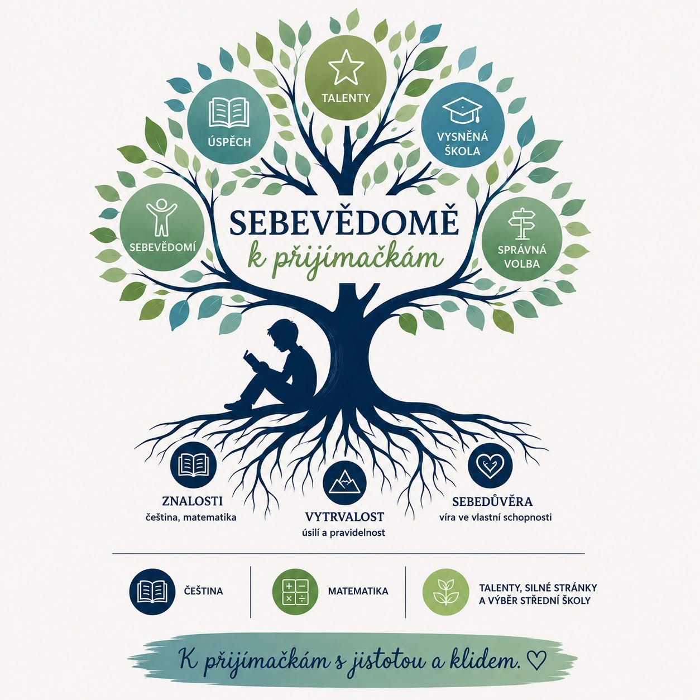

Jak začít s přípravou na přijímačky včas?

Přijímací zkoušky bývají spojené s představou intenzivního „dohánění“ v posledních měsících deváté třídy. Ve skutečnosti ale platí, že čím dřív dítě začne, tím méně stresu a tím lepší výsledky ho čekají – bez nutnosti cokoliv narychlo dohánět.
Proč nezačínat na poslední chvíli
Český jazyk i matematika jsou předměty, ve kterých se znalosti a dovednosti budují postupně, rok za rokem. Když se příprava odloží až na 9. třídu, dítě má na zvládnutí většího množství látky mnohem méně času – a tlak, který z toho vzniká, obvykle víc škodí než pomáhá.
Pokud naopak začneme už v 5. nebo 7. třídě, může se dítě látku učit v klidu, postupně a s dostatkem prostoru na to, aby jí skutečně rozumělo – ne aby si ji jen nabiflovalo na poslední chvíli.
Co konkrétně znamená „začít včas“
- Pravidelnost místo intenzity. Krátká, ale pravidelná práce s textem a čísly je efektivnější než nárazové týdenní „maratony“ před zkouškou.
- Budování čtenářských návyků. Porozumění textu je základ úspěchu u přijímačky z češtiny – a nejlíp se rozvíjí přirozeně, čtením, ne až za tři měsíce před testem.
- Poznávání silných stránek. Čím dřív dítě ví, v čem je dobré a co ho baví, tím snazší je pro něj i rozhodování o výběru střední školy.
- Klid místo tlaku. Rozložená příprava dává dítěti čas zvyknout si na formát zkoušky bez pocitu, že jde o „boj o život“.
Kdy je ten pravý čas?
Ideální je začít už v 5. třídě – právě proto v programu Sebevědomě k přijímačkám pracujeme se žáky 5., 7. i 9. tříd. Ale i v 9. třídě má smysl začít okamžitě: čím dřív, tím víc času zbývá na to, aby si dítě k přijímačkám vytvořilo vztah plný jistoty, ne strachu.
Chcete začít včas i vy?
Přihlásit dítě